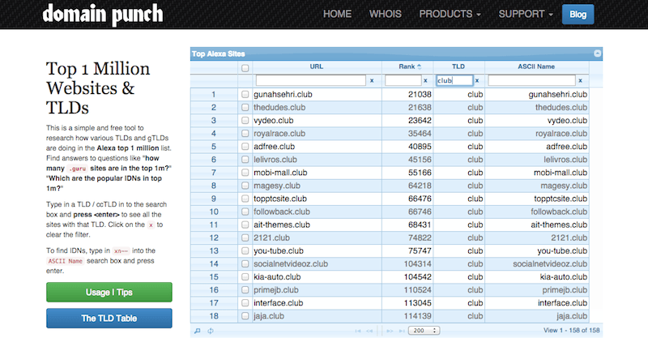

October 15, 2014


If you’re a podcast listener, Alex Blumberg’s new show, StartUp, just might be the best new show around. Here’s the synopsis, from the StartUp about page:
I’m Alex Blumberg. My experience is in public radio, as a producer for This American Life and as a co-founder of the business-economics series Planet Money. After years of reporting on other people’s businesses, I decided to start my own.
This show follows what happens next – my difficult journey from man to businessman. It’s a classic start-up story, but one that’s recorded in real time. I’ve documented disastrous pitches to investors, difficult conversations with my wife, and tense negotiations with my co-founder. The result is an honest, transparent account of something that happens all the time, but that we can rarely listen in on: starting a business.
I’d definitely recommend starting at the beginning, but the latest episode, titled “How To Name Your Company” is a fantastic look at how hard branding really is. Give it a listen.
Read more →
October 10, 2014
The internet has come a long way since the “dawn of the blogs” in the early 90’s, but as Anil Dash wrote recently, “The tools for blogging have been extraordinarily stagnant. And this stagnation is particularly egregious when we consider that almost every common behavior on the big social networks is a subset of what we originally thought blogging might be.”
Forecasting the future of blogging—and website creation in general—is a tall task, but there’s one upcoming platform that seems to be dreaming bigger than the rest—The Grid.
Read more →
October 10, 2014

I may be promoting everything that’s wrong with the internet today, but I kind of love a good list. And today I came across a great one—a list of the 100 oldest .com domain names, which go all the way back to March 15, 1985. Here are the first ten, from Domain Holdings:
Read more →
September 9, 2014


A few weeks ago we quietly released an almost completely reworked domain name search engine. Our older system, of which there had already been several iterations, was no longer coping with our incremental growth and the dozens of new top level domains being released each month (with 500+ more still due to launch). Not only are more people searching for domains, but the number of domains searched was stretching our old domain search engine’s limits.
Read more →
August 30, 2014

If you’re interested in domain names or like to follow the domain name industry, it’s good to take a step back every once in a while to look at the new gTLD (generic top-level domain) trends that are emerging. iwantmyname’s business model really doesn’t benefit from the popularity of one domain extension over another, but for us, this is perhaps the most exciting namespace expansion we’ll ever see. I mean, there’s a real chance that decades from now we’ll all look back at the early days of the internet and laugh about how everything used to end in .com. We’re still at the beginning of this whole “internet naming” thing, but the scaffolding for the future is being constructed before our very eyes. Here are some of the trends we’re noticing today.
Read more →
August 28, 2014

There are countless sites on the web dishing out advice for how you should name your website/company, but sometimes the very best recommendation is to look at what’s currently popular. And Domain Name Wire recently found a great site for this—Domain Punch.
Read more →
August 26, 2014
Quietly resting on my desktop nav, next to the icons for Twitter, Dropbox, OnePassword, Wifi and Finder, is the stylized Droplr drop—arguably one of the most useful apps on my computer. It doesn’t do a whole lot, but what it does, it does quite well.

Read more →
August 20, 2014


The one truth about growing a company is that at some point you’ll run out of qualified friends to employ. For us, our first hire outside of that group was a developer, because we badly needed someone who was good at the things we sucked at. And our hire was a good one, as he is an absolute expert in his field—but his most important trait was that he fit in really well with the team. Ever since our first hiring experience, we’ve made fitting in a top priority when adding team members, and it’s worked out extremely well.
Read more →
August 15, 2014

Ask a random business owner or entrepreneur what the hardest part of their startup process was and you’ll likely hear “naming”. Naming your business, brand or simple blog can be extremely challenging because there’s no exact science or guaranteed process to lean on. It needs to be unique but uncomplicated, easy to say but different enough to separate you from the pack, and ultimately, it needs to embody your story. Or maybe it doesn’t.
One thing is certain though—when you’re starting your naming process, you should always keep your domain name possibilities in mind. In this modern internet era, your website might just be your brand’s most public portal, so you need to make it count.
Here are a few quick tips to make your naming process a bit easier.
Read more →
August 7, 2014

From the Official Gmail Blog:
In 2012, an organization called the Internet Engineering Task Force (IETF) created a new email standard that supports addresses with non-Latin and accented Latin characters (e.g. 武＠メール.グーグル). In order for this standard to become a reality, every email provider and every website that asks you for your email address must adopt it. That’s obviously a tough hill to climb. The technology is there, but someone has to take the first step.
Today we’re ready to be that someone. Starting now, Gmail (and shortly, Calendar) will recognize addresses that contain accented or non-Latin characters. This means Gmail users can send emails to, and receive emails from, people who have these characters in their email addresses. Of course, this is just a first step and there’s still a ways to go. In the future, we want to make it possible for you to use them to create Gmail accounts.
Read more →
Older posts